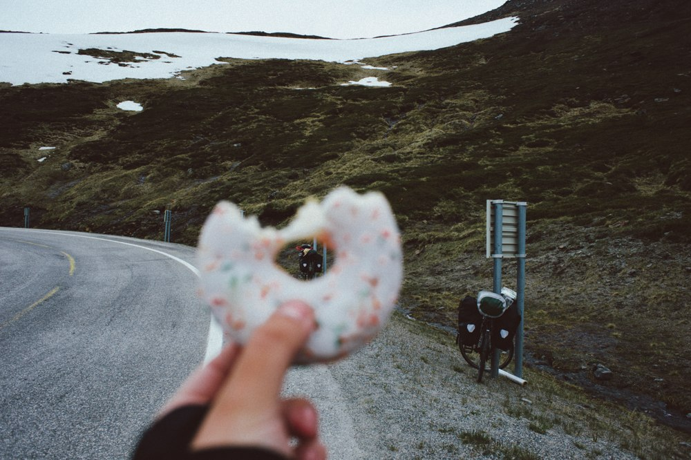

Norway: Нордкапп
Коротко о месте: Но́рдкап — мыс на острове Магерё на севере Норвегии, в коммуне Нордкап. Высота мыса 307 м.
Нередко также считается самой северной точкой Европы, однако, мыс расположен на острове, а к Европе относят и более северные острова архипелагов Шпицберген, Земля Франца-Иосифа и Новая Земля. Также соседняя точка Кнившелльодден выступает в море на 1,5 км севернее (оба места находятся на острове). Самой северной континентальной точкой Европы является мыс Нордкин.
Мыс Нордкап — часть большой скалы. Гранитная скала разбита трещинами на три выступа: средний, самый большой, и есть Нордкап. Верхняя часть Нордкапа плоская, покрыта каменистой тундрой с небольшими озёрами.
Несколько фотографий из этого северного места.
